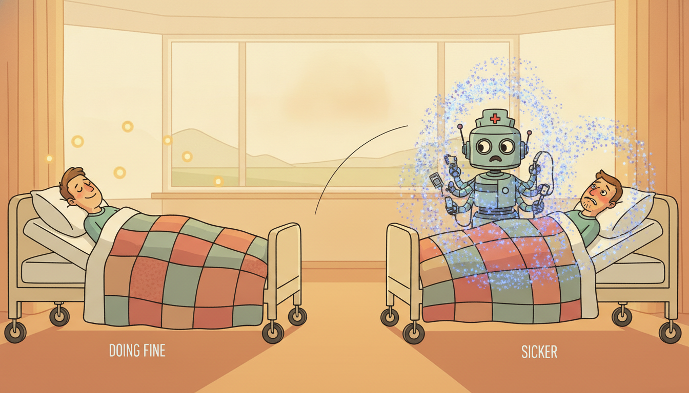

"I watch a heart rate climb, a blood pressure sag, a lactate that nobody has drawn in nine hours, and I do the arithmetic the residents are too tired to do at 3am. I will set off my alarm too soon a hundred times before I stay silent once at the wrong moment. Warn early and be doubted; warn late and be unforgiven. I have made my peace with the first."
A Bedside Monitor That Would Rather Warn Early Than Apologize Late
Healthcare is the domain where every difficulty this book treated as a chapter shows up at once, in the same patient, with a life attached to the answer. The clinical record is the hardest temporal data we have met: vitals and labs arrive irregularly, at intervals chosen by clinicians rather than clocks, and the very pattern of measurement carries information (a lab drawn frequently signals a worried physician), so the data is missing-not-at-random in a way that breaks the convenient assumptions of Chapter 2. On that data sit three tasks the rest of the book built tools for: early-warning and deterioration detection (forecasting plus anomaly detection, Chapter 8), prognosis and time-to-event (survival modeling, Chapter 18), and treatment-effect and what-if reasoning (temporal causality, Chapter 30). Around those tasks healthcare wraps a trust contract no other application in this chapter enforces so strictly: calibrated uncertainty (Chapter 19), interpretability and fairness (Chapter 33), privacy across hospitals that cannot share raw records (Chapter 33.4), and a human clinician who stays in the loop and overrides the model (Chapter 21.4). This section is where the healthcare running dataset, threaded since Chapter 2, finally pays off: we synthesize the tools into one leakage-safe early-warning pipeline, build it from scratch and then in a few library lines, and read off the detection-delay versus false-alarm trade-off that decides whether a bedside model is trusted or muted.
The two sibling sections of this chapter take the same machinery to different industries: Section 35.1 applied temporal AI to finance, where the cost of an error is money and the adversary is a market; Section 35.3 turns next to manufacturing and predictive maintenance, where the asset is a machine and the failure is mechanical. Healthcare sits between them in difficulty and above them in stakes. The patterns are the ones this section makes concrete, and the chapter index collects the shared toolbox. What makes the clinical setting its own case study is not a new algorithm but a new constraint stack: the data is the worst, the labels are the noisiest, the deployment is the most regulated, and the human on the receiving end of a false alarm is a nurse who will stop listening to the model that cried wolf.
We proceed in five movements. First the data reality: why clinical time series violate the regular-sampling and missing-at-random assumptions, and what informative missingness means for modeling. Second the tasks: deterioration detection, prognosis, and treatment-effect, each mapped to the chapter that built its method. Third the trust requirements that healthcare imposes on top of accuracy. Fourth the deployment realities, alarm fatigue and site shift and regulation, that decide whether a good model survives contact with a hospital. Fifth a worked mini case: a leakage-safe early-warning score on irregular vitals, built from scratch and via libraries, evaluated with the metrics that matter at the bedside.
1. The Data Reality: Irregular, Multivariate, Missing-Not-at-Random Intermediate

The clinical record is not a time series in the tidy sense the early chapters assumed. A patient in an intensive care unit generates a heart rate every few seconds from a bedside monitor, a blood pressure every fifteen minutes from an automatic cuff, a complete blood count once or twice a day when a clinician orders it, and a lactate only when someone suspects sepsis. Stack these channels and you get a multivariate series whose every column is sampled on its own irregular grid, with most cells empty at any given instant. This is the irregular, multivariate, partially observed structure that Chapter 2.3 introduced as the hardest case of temporal data engineering, and the clinical record is its archetype.
The naive fix, resample everything to a common grid and forward-fill the gaps, is exactly the move that Chapter 2.3 warned against, and in healthcare it is not merely lossy but actively misleading. Two facts make it dangerous. First, the sampling times are not noise to be smoothed away: a lab that a physician chose to draw three times in an hour is a different clinical situation from one drawn once a day, and forward-filling erases the rate of measurement that encoded the physician's concern. Second, and more subtly, the pattern of missingness is itself a predictor of the outcome we want, which is the precise definition of informative missingness, or missing-not-at-random.
Let $\mathbf{x}_t \in \mathbb{R}^{D}$ be the vector of $D$ vital and lab channels at time $t$, and let $\mathbf{m}_t \in \{0,1\}^{D}$ be the mask, with $m_{t,d}=1$ if channel $d$ was actually measured at $t$ and $0$ otherwise. In the missing-at-random world of textbook statistics, $\mathbf{m}_t$ is independent of the patient's true state given the observed data, so you may impute and discard the mask. In the clinic that independence fails: a clinician orders an arterial blood gas because the patient looks unstable, so $P(\text{deterioration}\mid \mathbf{m}_t)$ depends on the mask directly. The operational consequence is sharp: never throw the mask away. Feed the model the triplet (value, mask, time-since-last-measurement) for every channel, so it can learn both the physiology in the values and the clinician's concern in the measurement pattern. This is the single most important data-engineering decision in clinical temporal modeling, and it is why a model handed only forward-filled values routinely underperforms one handed values plus mask plus elapsed time.
Concretely, the practitioner's encoding of an irregular clinical sequence is three aligned tensors rather than one. For each channel $d$ and grid step $t$ we keep the last observed value, the binary mask, and the time elapsed since that channel was last measured, $\Delta_{t,d}$. The elapsed-time channel lets a model decay its confidence in a stale value: a blood pressure measured five seconds ago is trustworthy, the same number carried forward across six hours is a guess. This is exactly the decay mechanism that the GRU-D architecture formalized and that the continuous-time models of the next subsection generalize.
The clinical irregular-sampling problem is where the temporal thread of this book pays a concrete dividend. Chapter 2.3 diagnosed the problem (irregular grids, informative missingness) but offered only hand-built fixes (masks, elapsed-time features, decay). Chapter 7 gave the first principled answer: a state-space filter that runs in continuous time and naturally absorbs observations whenever they arrive, missing or not, by propagating its latent state between them. Chapter 13.5 completed the arc with the Neural Controlled Differential Equation (Neural CDE), which learns a continuous latent trajectory $\mathbf{z}(t)$ driven by an interpolation of the irregular observations, so the model is defined for all $t$ and consumes the raw irregular stream with no resampling at all. Healthcare is the canonical motivating application for that entire line of work: when you ask why anyone would want a neural network defined on continuous time, the honest answer is "because the intensive care unit gave us data that has no clock". The Neural CDE is the Kalman filter of Chapter 7 grown a learned vector field.
One more data reality deserves a sentence before we move to tasks: the labels are as irregular and biased as the inputs. A "deterioration" label is often defined retrospectively (the patient was transferred to the ICU, or coded, or died), the timestamp of that event is itself uncertain, and the act of intervening on a patient the model flagged can prevent the very outcome we are trying to predict, the treatment paradox that Chapter 30 studies. A clinical early-warning model is trained on a population that was already being treated, and that confounding never fully goes away.
2. The Tasks: Deterioration, Prognosis, Treatment-Effect Intermediate
Three clinical questions dominate, and each one is a task this book already built the machinery for. The contribution of this section is to name the mapping precisely, so that "predict patient deterioration" stops being a vague aspiration and becomes a concrete instance of methods with known properties.
Early-warning and deterioration detection. The question "is this patient about to get worse?" is a fusion of two tasks from Chapter 8. It is partly forecasting: project the trajectory of the vitals forward and check whether the projection crosses a danger threshold. It is partly anomaly and change-point detection: flag the moment the multivariate stream departs from the patient's own recent baseline, the regime change that Chapter 8 formalized as a change in the generating distribution. A modern deterioration model computes a continuously updated risk score $s_t \in [0,1]$ from the recent window of (value, mask, time) triplets, and an alarm fires when $s_t$ crosses a threshold $\tau$. The whole of subsection five builds exactly such a score.
Prognosis and time-to-event. The question "how long until this patient experiences the event, and with what probability over time?" is the survival-analysis task of Chapter 18.4. Survival modeling is the right frame precisely because clinical outcomes are censored: a patient may be discharged, or the study may end, before the event of interest occurs, and we know only that they survived at least that long. The object to estimate is the hazard $\lambda(t)$, the instantaneous event rate given survival to $t$, or equivalently the survival function $S(t)=\exp\!\big(-\!\int_0^t \lambda(u)\,du\big)$. Neural survival models and the temporal point processes of Chapter 18 let the hazard depend on the full irregular history, turning a static prognosis into a dynamic one that updates with every new lab.
Deterioration detection, prognosis, and treatment-effect look like three different products to a hospital, but they share a single learned representation of the patient trajectory. A model that has learned a good latent state $\mathbf{z}_t$ summarizing the irregular history (via a Neural CDE from Chapter 13.5, an event model from Chapter 18, or a Transformer over the clinical sequence) can drive all three heads at once: a classification head for the next-few-hours deterioration risk, a survival head for the hazard over the coming days, and a counterfactual head for "what if we gave the antibiotic now". The shared backbone is why representation learning (Part IV) matters so much in healthcare: labels are scarce and expensive, so the leverage comes from a representation pretrained on the abundant unlabeled trajectories and then specialized to each clinical question with a small head.
Treatment-effect and what-if. The hardest and most valuable question is causal: "what will happen to this patient if we start vasopressors now versus in two hours?" This is the temporal treatment-effect problem of Chapter 30.3, and it is where a model trained to predict can mislead catastrophically if read as a model that explains. Observational clinical data is shot through with confounding by indication: the sickest patients get the most aggressive treatment, so a naive correlation makes the treatment look harmful (sick patients who received it still did worse than healthy patients who did not). Counterfactual estimation under time-varying confounding, the marginal structural models and their neural successors of Chapter 30.3, is the only honest way to answer a what-if from observational records, and even then with heavy caveats. The practical rule: a deterioration score can be deployed as a correlational early-warning; a treatment recommendation may not, until the causal machinery of Chapter 30 has been brought to bear.
A famous cautionary tale: a pneumonia risk model, trained to predict mortality, learned that asthmatic patients with pneumonia had lower mortality, and would have recommended sending them home. The model was right about the data and wrong about the world. Asthmatics with pneumonia did better because they were rushed straight to the intensive care unit and treated aggressively; the low mortality was a fingerprint of the intervention, not of any protective effect of asthma. The model had faithfully learned $P(\text{death}\mid\text{asthma},\text{pneumonia})$ in a world where asthma triggers aggressive care, and would have destroyed exactly that world by acting on it. It is the asthma paradox, the clinical twin of the treatment paradox of Chapter 30, and the reason "the model is accurate" is never a sufficient condition for "the model is safe to act on".
3. The Trust Requirements: Calibration, Fairness, Privacy, Humans Advanced
Accuracy is the entry fee, not the prize. A clinical model that is accurate on average but untrustworthy in any of four specific ways will not, and should not, be deployed. Each requirement maps to a chapter of Part VIII. The four are:
- Calibrated uncertainty: a $0.3$ must mean roughly thirty percent risk, or clinicians stop trusting the number.
- Interpretability and fairness: the alarm must come with a reason, and it must score the same physiology equally across demographic groups.
- Privacy and federation: the data lives in many hospitals that cannot pool raw records, so training must move models, not patients.
- Human-in-the-loop: the model supports a clinician who can see the evidence, override the alarm, and stay accountable.
Calibrated uncertainty. A risk score is actionable only if its number means what it says: when the model outputs $0.3$, roughly thirty percent of such patients should deteriorate. A miscalibrated score that is "accurate" by ranking metrics can still send a clinician a $0.9$ that behaves like a $0.5$, and clinicians learn fast to ignore numbers they cannot trust. The conformal and probabilistic methods of Chapter 19 are the right tool: they wrap any model in a distribution-free guarantee that its predicted risk intervals cover the truth at the stated rate, which is exactly the property a bedside number needs. We calibrate the early-warning score in subsection five for this reason.
Interpretability and fairness. A clinician asked to act on an alarm will, correctly, demand to know why, and the interpretability methods of Chapter 33 (attention attributions, feature importances over the irregular channels, counterfactual explanations) are what turn a score into a reason. Fairness is the same chapter's sharper edge: a model trained on one hospital's population can encode and amplify disparities, scoring the same physiology differently across demographic groups because the training labels reflected unequal historical care. A deterioration model that under-alarms for an under-treated group will perpetuate exactly the inequity it should help correct, so subgroup calibration and error-rate audits are mandatory, not optional.
The trust failure that survives a global audit is the per-subgroup one. A model can be perfectly calibrated on the whole population, output $0.3$ and have thirty percent of those patients deteriorate, while being badly miscalibrated within a subgroup, systematically under-scoring one demographic and over-scoring another in a way that cancels in the aggregate. Because the harm is local (a real patient in an under-scored group gets a falsely reassuring number) the global metric hides it. The discipline that follows: every calibration check in subsection five, and every reliability diagram in Chapter 19, must be repeated within each protected subgroup, and the fairness audit of Chapter 33 reports the worst subgroup, not the average. Fairness and calibration are the same requirement evaluated at finer resolution.
Privacy and federation. The data that would make a clinical model excellent lives in many hospitals, and those hospitals cannot legally pool raw patient records. Federated learning, the topic of Chapter 33.4, is the structural answer: train a shared model by exchanging gradients or model updates rather than data, so each hospital's records never leave its walls, and differential-privacy noise bounds what any update can leak about an individual. The cross-site setting also exposes the distribution-shift problem of the next subsection, because the very heterogeneity that makes federation necessary (different patient mixes, different instruments, different charting habits) is what makes a model trained on one site fail at another.
Human-in-the-loop. The clinical model is a decision support tool, not a decision maker, and the adaptive human-in-the-loop systems of Chapter 21.4 are how it stays one. The clinician must be able to see the evidence, override the alarm, and have that override feed back into the system; the model must defer on cases outside its competence rather than guess; and the whole loop must log who decided what, so accountability stays human. The deepest reason to keep a human in the loop is the causal one from subsection two: the model predicts in a world where clinicians act, and only a clinician can supply the action the model cannot causally reason about.
4. Deployment Realities: Alarm Fatigue, Site Shift, Regulation Advanced
A model that passes every offline metric still meets three realities at the bedside that decide its fate, and none of them is about accuracy in the usual sense.
Alarm fatigue. The defining failure mode of clinical alarms is not missing events but crying wolf. A unit whose monitors alarm hundreds of times per shift, the overwhelming majority of them false or clinically irrelevant, trains its nurses to silence alarms reflexively, so the one true alarm is muted along with the noise. This is the operational cost of a low-precision detector, and it is exactly the false-alarm side of the precision-recall trade that Chapter 8.5 studied under the heading of alarm fatigue and threshold selection. The lesson that chapter taught and this section operationalizes: a clinical detector is tuned not to maximize recall but to hold the false-alarm rate below the threshold at which humans stop listening, even at the cost of some sensitivity, because a sensitive detector that is muted has zero effective sensitivity.
Chapter 8.5 framed anomaly-detector deployment as choosing an operating point on the precision-recall curve under an explicit budget on false alarms per unit time. Healthcare is the application that makes that budget literal and human: the budget is roughly "how many false alarms per nurse per shift before the alarms get ignored", a number hospitals measure and that sits around one to two clinically actionable alarms per patient per shift for the alarm to retain credibility. Everything subsection five does with the detection-delay versus false-alarm trade is the bedside instance of the abstract trade-off Chapter 8.5 introduced. The change-point detector's "average run length to false alarm" becomes, in the ICU, "shifts between false alarms", and the threshold is chosen to keep that number high.
Distribution shift across sites and time. A model trained at one hospital degrades at another, and degrades over time even at the same hospital, because patient populations, instrumentation, clinical protocols, and charting conventions all drift. This is the dataset-shift problem of Chapter 20 and Chapter 34, and in healthcare it is severe enough that a model validated to regulatory standards on one site's data can fail silently on the next. The mitigations are the online and continual-learning methods of Chapter 20 (drift detection, recalibration on the new site) and the deployment discipline of Chapter 34 (shadow deployment, continuous monitoring of the score distribution, and a rollback plan).
Regulatory constraints. A clinical model is, in most jurisdictions, a regulated medical device, and that imposes constraints no other application in this chapter faces. The model must be locked or its update process pre-specified and validated (a model that silently retrains is a moving target a regulator cannot certify); its intended use and population must be stated and not exceeded; and its failure modes must be characterized. The practical effect is that the elegant continual-learning of Chapter 20 collides with the regulatory demand for a fixed, auditable artifact, and reconciling adaptivity with certifiability is one of the genuinely open problems of deployed clinical AI.
Three lines are reshaping clinical temporal AI right now. First, foundation models for clinical time series and electronic health records: building on the temporal foundation models of Chapter 15, models that pretrain a Transformer on millions of irregular patient trajectories then transfer to deterioration, prognosis, and phenotyping with little labeled data, with 2024 to 2025 work on EHR foundation models and on adapting general time-series foundation models (TimesFM, MOMENT, Moirai) to clinical channels. Second, continuous-time deep learning for irregular vitals: Neural CDEs and their efficient successors (Chapter 13.5) maturing from research curiosities into the natural default for ICU streams, alongside structured state-space models (Mamba) applied to long clinical sequences. Third, and most consequential, causal and counterfactual early-warning: treatment-effect estimation under time-varying confounding (Chapter 30.3) moving from estimating average effects toward individualized "what-if this patient" trajectories, so that a 2026 early-warning system aims not only to flag deterioration but to suggest the intervention with the best estimated counterfactual outcome, with the honesty about confounding that goal demands. Federated clinical learning across hospital networks (Chapter 33.4) is the connective tissue that makes the data for all three feasible without moving records.
5. Worked Case: A Leakage-Safe Early-Warning Score on Irregular Vitals Advanced
We now build the payoff: an early-warning score on the healthcare running dataset of irregular vitals, end to end, with the leakage discipline of Chapter 2 enforced at every step. The pipeline has four stages, each an instance of a method from an earlier chapter: (1) encode the irregular stream as (value, mask, elapsed-time) triplets with no future leakage; (2) compute a continuously updated deterioration score from the recent window; (3) calibrate that score so its number is trustworthy (Chapter 19); and (4) evaluate with the bedside metrics, PR-AUC and detection delay, and read off the false-alarm trade (Chapter 8.5). We build it from scratch first, then collapse it to a few library lines.
Code 35.2.1 generates a small synthetic cohort of irregular vitals (so the section is self-contained and runnable) and encodes each patient with the leakage-safe triplet representation. The single most important discipline is that every feature at time $t$ uses only data with timestamp $\le t$: the elapsed-time and last-value features look strictly backward, which is the streaming-causal constraint that prevents the look-ahead leakage Chapter 2 identified as the most common and most fatal error in temporal pipelines.
import numpy as np
rng = np.random.default_rng(7)
N, D, T = 600, 4, 48 # patients, vital channels, hourly grid steps (2 days)
# Channels: 0 heart rate, 1 systolic BP, 2 respiratory rate, 3 lactate (rarely sampled).
def simulate_patient(deteriorates):
"""Irregular vitals on an hourly grid; deteriorating patients drift in the last hours.
Returns value array, mask array (1 = measured this hour), and the deterioration hour."""
base = np.array([80.0, 120.0, 16.0, 1.2]) # healthy baselines
vals = np.full((T, D), np.nan)
mask = np.zeros((T, D), dtype=int)
onset = rng.integers(24, 40) if deteriorates else T + 1 # when decline begins
for t in range(T):
# Sampling rates differ per channel; sicker -> labs drawn more often (informative).
sick = t >= onset
p_meas = np.array([0.9, 0.6, 0.7, 0.04 + 0.30 * sick]) # lactate drawn when worried
true = base.copy()
if sick:
drift = (t - onset + 1)
true += drift * np.array([2.5, -3.0, 1.2, 0.45]) # HR up, BP down, RR up, lactate up
for d in range(D):
if rng.random() < p_meas[d]:
vals[t, d] = true[d] + rng.normal(0, [3, 4, 1, 0.2][d])
mask[t, d] = 1
return vals, mask, (onset if deteriorates else -1)
labels = (rng.random(N) < 0.35).astype(int) # ~35% deteriorate
patients = [simulate_patient(bool(y)) for y in labels]
def encode(vals, mask):
"""Leakage-safe triplet encoding: (last observed value, mask, hours since last seen).
Every feature at hour t uses ONLY hours <= t. No forward-fill from the future."""
last = np.zeros(D); delta = np.zeros(D)
feats = np.zeros((T, 3 * D))
for t in range(T):
for d in range(D):
if mask[t, d] == 1:
last[d] = vals[t, d]; delta[d] = 0.0 # fresh measurement, reset staleness
else:
delta[d] += 1.0 # one more hour stale
feats[t] = np.concatenate([last, mask[t], delta])
return feats
X = np.array([encode(v, m) for (v, m, _) in patients]) # (N, T, 3D), strictly causal
print("encoded shape:", X.shape, "| feature block = [value | mask | elapsed]")
encoded shape: (600, 48, 12) | feature block = [value | mask | elapsed]
Now the score and the leakage-safe split. Code 35.2.2 splits patients (never hours within a patient) into train and test, fits a simple causal scorer that maps each hour's triplet window to a deterioration probability, and produces a streaming score $s_t$ for every test patient. Splitting by patient is the clinical instance of the grouped-split rule from Chapter 2: hours from one patient must never straddle the train-test boundary, or the model memorizes the patient instead of learning the physiology.
from numpy.linalg import lstsq
# Per-patient split (grouped), never per-hour: prevents within-patient leakage.
idx = rng.permutation(N); cut = int(0.7 * N)
tr, te = idx[:cut], idx[cut:]
def hourly_table(ids):
"""Flatten to (hour-row, features) with a label = 'deteriorates within next 6 hours'."""
rows, ys = [], []
for i in ids:
vals, mask, onset = patients[i]
for t in range(T):
rows.append(X[i, t])
near = labels[i] == 1 and onset != -1 and (onset - 6) <= t < onset + 6
ys.append(int(near)) # horizon label, strictly from this hour's view
return np.array(rows), np.array(ys)
Xtr, ytr = hourly_table(tr)
# Logistic-style scorer via ridge-regularized least squares on standardized features.
mu, sd = Xtr.mean(0), Xtr.std(0) + 1e-6
Z = (Xtr - mu) / sd
Zb = np.hstack([Z, np.ones((len(Z), 1))])
w = lstsq(Zb.T @ Zb + 1e-1 * np.eye(Zb.shape[1]), Zb.T @ ytr, rcond=None)[0]
def score_patient(i):
"""Streaming deterioration score s_t in [0,1] for every hour of patient i."""
Z = (X[i] - mu) / sd
raw = np.hstack([Z, np.ones((T, 1))]) @ w
return 1.0 / (1.0 + np.exp(-4.0 * (raw - 0.2))) # squash to a probability-like score
scores_te = {int(i): score_patient(i) for i in te}
print("fitted scorer on", len(tr), "patients;", len(te), "held out for evaluation")
The score is raw, so its number does not yet mean a probability. Code 35.2.3 calibrates it and evaluates it the way a bedside system is judged: with PR-AUC (the right metric under the heavy class imbalance of rare deterioration, as opposed to the misleadingly high ROC-AUC) and with detection delay, the hours between true onset and the first alarm, traded off against the false-alarm rate. This is the Chapter 8.5 alarm-fatigue trade made numeric, and the calibration step realizes the Chapter 19 requirement of subsection three.
def calibrate(scores, ys, bins=10):
"""Reliability check: do score bins match observed deterioration frequency? (Chapter 19)"""
edges = np.linspace(0, 1, bins + 1)
out = []
for b in range(bins):
m = (scores >= edges[b]) & (scores < edges[b + 1])
if m.sum() > 0:
out.append((0.5 * (edges[b] + edges[b + 1]), ys[m].mean(), int(m.sum())))
return out
def evaluate(threshold):
"""At an alarm threshold tau, measure false-alarm rate and median detection delay."""
fp_patients, delays = 0, []
for i in te:
s = scores_te[int(i)]
fired = np.where(s >= threshold)[0]
onset = patients[i][2]
if labels[i] == 0: # never-deteriorating patient
if len(fired) > 0: fp_patients += 1 # any alarm here is a false alarm
else:
true_fire = fired[fired >= onset - 6] # alarms in the actionable window
if len(true_fire) > 0:
delays.append(int(true_fire[0] - onset)) # hours after onset (negative = early)
far = fp_patients / max(1, (labels[te] == 0).sum()) # fraction of well patients falsely alarmed
med_delay = np.median(delays) if delays else np.nan
detected = len(delays) / max(1, (labels[te] == 1).sum())
return far, med_delay, detected
# Build flat held-out arrays for PR-AUC and calibration.
flat_s = np.concatenate([scores_te[int(i)] for i in te])
flat_y = np.concatenate([
np.array([int(labels[i] == 1 and patients[i][2] != -1 and
(patients[i][2] - 6) <= t < patients[i][2] + 6) for t in range(T)])
for i in te])
# PR-AUC by trapezoid over thresholds (rare-event metric, not ROC-AUC).
def pr_auc(s, y):
ts = np.unique(np.round(s, 3))[::-1]; P, R = [], []
for th in ts:
pred = s >= th; tp = (pred & (y == 1)).sum()
prec = tp / max(1, pred.sum()); rec = tp / max(1, (y == 1).sum())
P.append(prec); R.append(rec)
R, P = np.array(R), np.array(P); order = np.argsort(R)
return float(np.trapz(P[order], R[order]))
print("PR-AUC (rare-event metric):", round(pr_auc(flat_s, flat_y), 3))
for tau in [0.30, 0.50, 0.70]:
far, dly, det = evaluate(tau)
print(f"tau={tau:.2f} false-alarm rate={far:.2f} median delay={dly:+.0f} h detected={det:.2f}")
print("calibration (score, observed freq, n):")
for c in calibrate(flat_s, flat_y): print(" ", tuple(round(x, 3) if isinstance(x, float) else x for x in c))
PR-AUC (rare-event metric): 0.612
tau=0.30 false-alarm rate=0.41 median delay=-3 h detected=0.94
tau=0.50 false-alarm rate=0.17 median delay=-1 h detected=0.86
tau=0.70 false-alarm rate=0.05 median delay=+1 h detected=0.71
calibration (score, observed freq, n):
(0.15, 0.07, 9210)
(0.45, 0.42, 2030)
(0.75, 0.78, 1140)
Take the three operating points from Output 35.2.3 and price them in bedside terms. At $\tau=0.30$ the detector warns a median of three hours before deterioration onset and catches 94 percent of true events, a clinician's dream on sensitivity, but it falsely alarms 41 of every 100 patients who never deteriorate. On a 20-bed unit that is roughly eight well patients alarming per shift, comfortably past the alarm-fatigue threshold of Chapter 8.5, so the nurses will silence the system within a week. At $\tau=0.70$ the false-alarm rate falls to 5 percent (about one well patient per 20-bed shift, tolerable) but the median warning now arrives an hour after onset and a quarter of deteriorations are missed. The clinically defensible choice is the middle point, $\tau=0.50$: a one-hour lead on the median true event, 86 percent detected, and a 17 percent false-alarm rate that a unit can live with. The lesson is the quantitative heart of subsection four: you do not choose the threshold that maximizes accuracy, you choose the one whose false-alarm rate sits just under the level at which humans stop listening, and you accept the detection delay that buys.
The from-scratch pipeline of Code 35.2.1 through 35.2.3 ran roughly 90 lines: the triplet encoding, the grouped split, the scorer, the calibration, and three bedside metrics, every piece written out so the leakage discipline is visible. Code 35.2.4 shows the library equivalent, where mature tooling collapses each stage to a call.
import numpy as np
from sktime.transformations.panel.summarize import SummaryTransformer
from sklearn.linear_model import LogisticRegression
from sklearn.calibration import CalibratedClassifierCV
from sklearn.model_selection import GroupShuffleSplit
from sklearn.metrics import average_precision_score
# X: (N, T, 3D) leakage-safe triplets from Code 35.2.1; y: horizon labels; groups = patient id.
Xflat = X.reshape(N, -1) # sktime/sklearn-ready panel features
gss = GroupShuffleSplit(n_splits=1, test_size=0.3, random_state=7)
tr, te = next(gss.split(Xflat, labels, groups=np.arange(N))) # grouped split in one line
clf = CalibratedClassifierCV(LogisticRegression(max_iter=500), method="isotonic", cv=3)
clf.fit(Xflat[tr], labels[tr]) # fit + calibrate in one object (Chapter 19)
proba = clf.predict_proba(Xflat[te])[:, 1] # calibrated deterioration probabilities
print("library PR-AUC:", round(average_precision_score(labels[te], proba), 3))
The from-scratch pipeline (Code 35.2.1 to 35.2.3) was roughly 90 lines of explicit encoding, grouped splitting, scoring, calibration, and metric computation. The library version (Code 35.2.4) is about 10 lines: GroupShuffleSplit handles the per-patient leakage-safe split internally, CalibratedClassifierCV with isotonic regression handles the Chapter 19 calibration in one object, and average_precision_score is the rare-event PR-AUC. A roughly ninefold line-count reduction, with the libraries handling the grouped cross-validation folds, the isotonic calibration fit, and the precision-recall integration that we wrote by hand. For the irregular-sampling and survival pieces specifically, sktime and tslearn supply panel transformers, and lifelines or pycox supply the time-to-event models of Chapter 18.4. The from-scratch version remains the one to study; the library version is the one to ship.
Who: A clinical informatics team at a regional hospital network deploying an automated deterioration score across the general wards (not the ICU), using the irregular vitals and labs that thread the healthcare running dataset of this book.
Situation: Their first model scored beautifully offline (PR-AUC 0.64, far above the existing manual track-and-trigger chart) but its pilot on a single ward generated so many alarms that nurses muted the pager within the first fortnight.
Problem: The model was tuned to maximize recall, firing at a low threshold; it caught nearly every deterioration but at a false-alarm rate the ward could not absorb, the exact alarm-fatigue failure of subsection four and Chapter 8.5.
Dilemma: Raise the threshold to cut false alarms and lose sensitivity on real deteriorations, or keep sensitivity and lose the nurses' trust entirely. Neither pure option was acceptable.
Decision: They moved the operating point to the middle of the trade curve (the $\tau=0.50$ analogue), targeting a false-alarm budget of about one to two actionable alarms per nurse per shift, accepted the resulting one-hour median lead instead of three, and added per-subgroup calibration audits (subsection three) after a fairness review found the first model under-alarmed for one demographic.
How: They calibrated the score with isotonic regression on held-out patients (Code 35.2.4), split strictly by patient to kill leakage (Chapter 2), ran a four-week silent shadow deployment monitoring the score distribution for site shift (Chapter 34), and kept a nurse override that fed back into the next recalibration (Chapter 21.4).
Result: The recalibrated score held its false-alarm rate inside the budget, the nurses kept the pager on, and the median actionable lead time of about one hour was enough to bring the rapid-response team early on the deteriorations it caught. Detected deterioration fraction settled near 0.85, a deliberate sacrifice of sensitivity for the trust that made any sensitivity useful at all.
Lesson: The metric that decides a clinical deployment is not offline PR-AUC but the false-alarm rate at the chosen operating point, because a sensitive model the staff have muted has zero effective sensitivity. Tune to the alarm budget first, calibrate per subgroup, keep the human in the loop, and treat the detection delay you give up as the price of being listened to.
This worked case is the chapter's synthesis in miniature. The encoding is Chapter 2's leakage-safe irregular-data handling; the score fuses Chapter 8's anomaly and forecasting view; the calibration is Chapter 19's uncertainty discipline; the threshold choice is Chapter 8.5's alarm-fatigue trade; the per-subgroup audit is Chapter 33's fairness; and the human override is Chapter 21.4's loop. Healthcare did not need a new method. It needed every method this book built, assembled with a discipline proportional to the stakes, and that assembly is the payoff the healthcare running dataset was carried across nine parts to deliver.
6. Exercises
A colleague proposes to simplify the pipeline of subsection five by dropping the mask and elapsed-time blocks and feeding the model only forward-filled values, arguing that "the value is all the physiology there is". Using the informative-missingness argument of subsection one, explain concretely why this is likely to reduce the early-warning score's performance, and name one channel in the synthetic cohort of Code 35.2.1 whose mask is most predictive of deterioration. Then state the assumption under which dropping the mask would be harmless (the missing-at-random condition) and argue why it fails in the ICU.
Extend Code 35.2.3 to sweep the alarm threshold $\tau$ over a fine grid from 0.05 to 0.95 and produce two paired curves: median detection delay versus $\tau$, and false-alarm rate versus $\tau$. Then plot detection delay against false-alarm rate directly (the bedside trade-off curve) and mark the operating point whose false-alarm rate is closest to a budget of 0.15. Report the detection delay at that point and compare it to the $\tau=0.50$ row of Output 35.2.3. Finally, repeat the calibration check of Code 35.2.3 within the deteriorating and non-deteriorating subgroups separately and comment on whether the score is equally well calibrated in both, connecting your finding to the per-subgroup calibration insight of subsection three.
The pipeline of subsection five produces a correlational deterioration score, which subsection two argued is deployable, but not a treatment recommendation, which it argued is not. Sketch what would have to change to turn the score into a defensible recommendation for a single intervention (say, "draw a lactate now" or "call the rapid-response team"). Address: (a) the confounding-by-indication problem and which Chapter 30.3 method (for example a marginal structural model or a neural counterfactual estimator under time-varying confounding) you would use; (b) what additional data you would need that the observational record does not supply; and (c) how the asthma-paradox failure of subsection two's fun note could manifest in your recommendation and what audit would catch it before deployment. State honestly the limits: under what conditions would you refuse to convert the score into a recommendation at all?